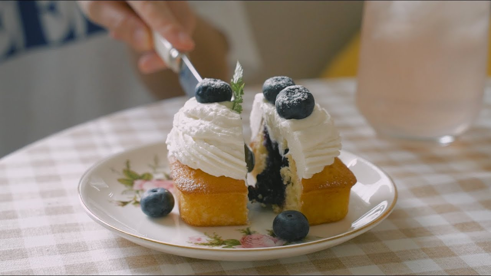
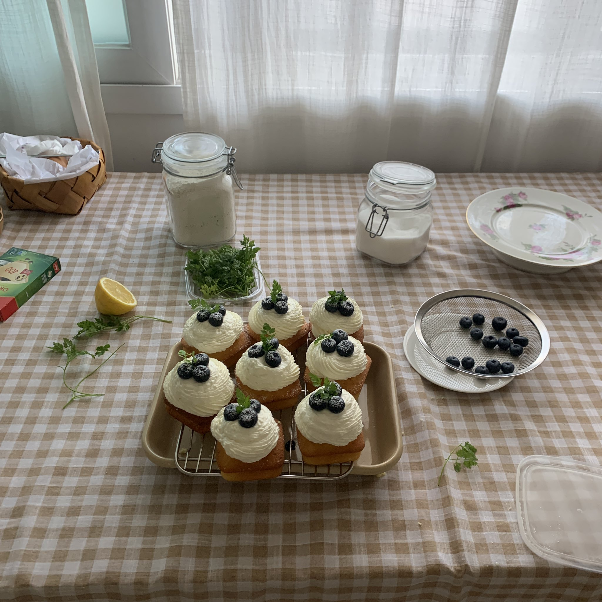
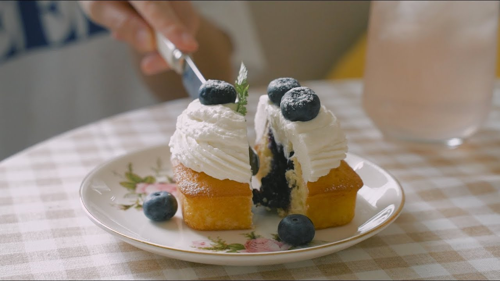
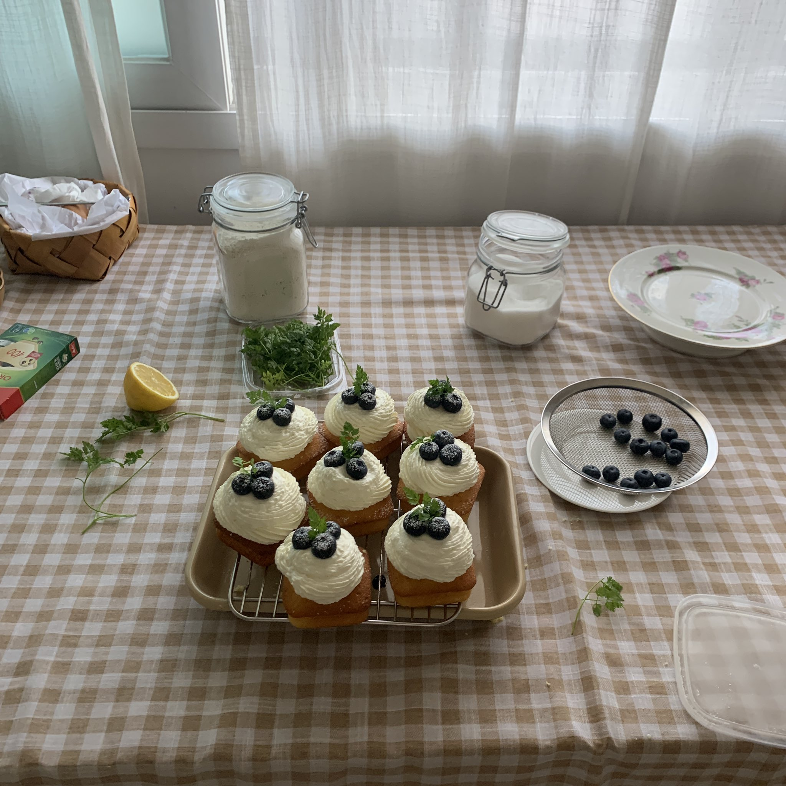

This delicacy is a basic pound cake recipe turned into a beautiful dessert you could buy at a dessert cafe. The best way to enjoy the confection is to have the cake, compote and yogurt cream all in one bite, as the blueberry compote and yogurt cream add a fresh finish to the rich pound cake.
Blueberry filled mini pound cake
recipe by honeykki
Ingredients
Pound cake
135g unsalted butter(softened)
120g sugar
3 eggs
135g cake flour
4g or 1/2tsp baking powder
1tsp vanilla extract
Blueberry compote
150g blueberries
75g sugar
juice of half a lemon
Yogurt cream
300g heavy cream
30g sugar
80g unsweetened greek yougurt
Toppings
blueberries
herbs like fresh mint or chervil
Recipe
1. In a mixing bowl, soften the butter using a spatula. And then, add and mix the sugar.
2. add and mix eggs and vanilla extract into the (1)butter mixture.
3. add and mix sifted dry ingredients(cake flour and baking powder) using a spatula.
If you see lumps, you can use a whisk for a moment.
4. Fill with batter 80% of the mold coated with butter and flour.
5. Bake in preheated oven at 175℃ for 12~15min until golden brown.
6. Cool completely on the wire rack.
7. In a sauce pan, add and mix blueberries and sugar.
8. Simmer and constantly stir for 15min on low heat and finish off with lemon juice.
9. Completely cool the compote.
10. In a large bowl, add heavy cream and sugar and whip until soft peaks form.
And then, add greek yogurt and keep whipping until hard.
Chill the yogurt cream in the refrigerator before use.
11. Dig a hole in the pound cake to fill the compote using an apple corer.
If you don’t have an apple corer, you can use a long tea spoon like me.
12. Fill the compote into pound cake hole and top with yogurt cream.
13. Finish off with fresh blueberries and herb.
Chill the cake in the refrigerator for 30min and serve!
 



Recipe Websites
1. W Table
I really appreciate how clean this site is in appearance and in directing the audience to exactly what they would need. The site is also very thorough in delineating hierarchy and divisions with ingredients and instructions.
2. Cooking Tree Blog
This site works cohesively with the Cooking Tree YouTube videos, existing for people to use as an additional resource through written instructions. The design of this site is also very clean and straight forward in direction.
3. Peaceful Cuisine
This site is very inviting with the inclusion of a video recipe along with written instructions in English and Japanese. This makes a good reference in ease of accessing the video and instructions in one place.
Non-Recipe Websites
1. miffy
The design of miffy is very simplistic and exemplifies what I would like to implement in my own design. The site is also very engaging with illustrations of Miffy.
2. Pearl's Tea
This is a tea shop from my home town that I love for their design! The site is very elegant with their use of typefaces and limited color palette.
3. Jellycat
The design of this site is pleasing for its minimalism in design and images of each product. Generally, everything is well-presented and organized.